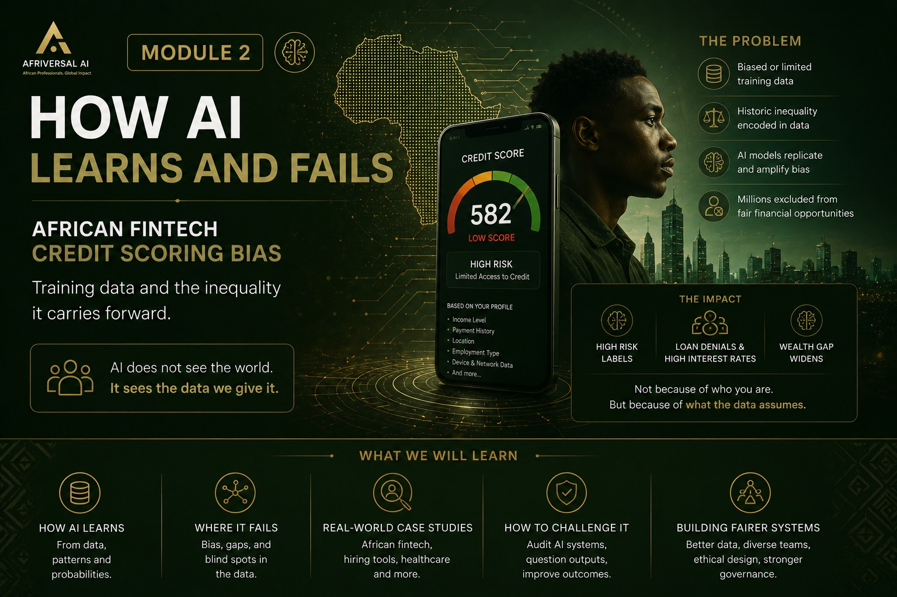
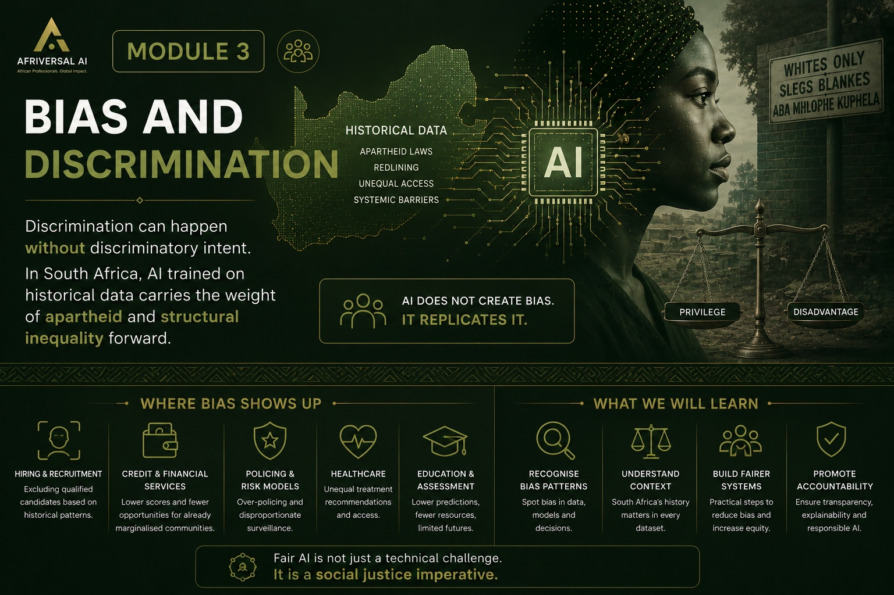
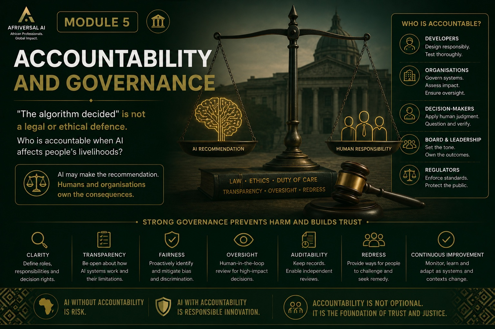
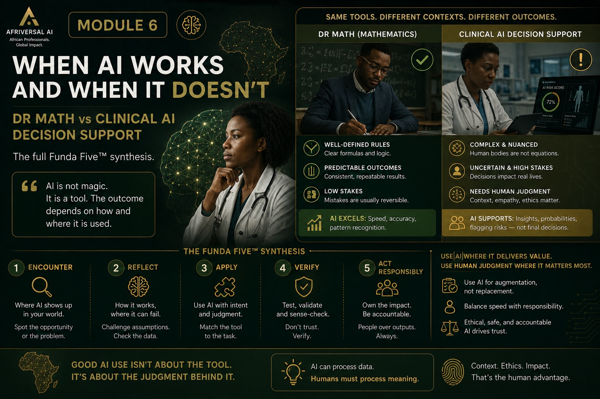

Start from zero. Build real judgment.
6 case studies. One framework that works.
Module 0 builds the shared foundation — what AI actually is, what it isn't, where you already encounter it. Then 6 core modules each apply the Funda Five™ to a real SA case study.

AI Fundamentals: What Is It, Really?
What AI is, what it isn't, the three types you'll encounter at work, and five things it cannot do — regardless of how confident it sounds. Every learner starts here.
Start Module 0 →
The Confidence Problem
What makes AI different from a calculator? What can it not do? Why does it sound confident when it's wrong?
~80 min · All sectors · Builds on Module 0

How AI Learns — and Fails
How does AI actually produce an output? What are its failure modes, and why are some failures invisible?
~100 min · All sectors · Builds on Module 1

Bias and Discrimination
AI inherits the biases in the data it learned from. In SA, that data carries the history of apartheid and gender inequality.
~90 min · All sectors · Builds on Module 2
Verification and Judgment
Verification is a professional skill, not a technical one. How do you know when to act on AI output and when to pause?
~70 min · All sectors · Builds on Module 3

Accountability and Governance
"The algorithm decided" is not a legal or ethical defence. Who is accountable when AI affects people's livelihoods?
~70 min · All sectors · Builds on Module 4

When AI Works — and When It Doesn't
Apply the full Funda Five™ to two contrasting SA cases: a clear success and a clear failure. Build your personal AI judgment statement.
~80 min · All sectors · Capstone · Requires Modules 1–5
Your Sector Deep Dive
A module built for your sector — tailored case studies, sector-specific AI failure modes, and the Funda Five™ applied to your professional context. Tracks available for Education, Finance, Government, Healthcare, and Corporate.
Sector-specific · Finance, Gov, Healthcare, Education, Corporate · Requires Module 6